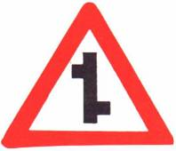
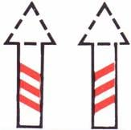
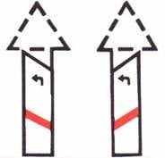
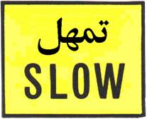

شاخصات (إشارات) التحذير
أ-1

طريق وعرة أو مشوشة
أ-2
انعطاف حاد إلى اليسار
أ-3
انعطاف حاد إلى اليمين
أ-5
انعطاف شديد الالتواء نحو اليمين
أ-7
انعطاف إلى اليمين وثم إلى اليسار
أ-8
طريق ملتوية
أ-9
الطريق آخذة في الضيق
أ-10
جسر ضيق
أ-11
أشغال على الطريق
أ-12

مفترق تقاطع طرق
أ-14
مفترق تفرع طرق إلى اليمين
أ-15
مفترق تفرع طرق إلى اليمين والى اليسار
أ-17
مفترق تفرعات: نحو اليمين وثم نحو اليسار
أ-18
حركة سير دائرية على بعد 50-150 متر
أ-19
آلة ضوئية على بعد 50-150 متر
أ-20

اندماج شارع فيه حق الأولوية مع طريق جانبية من اليمين (ممنوع الاستدارة إلى الطريق الجانبية)
أ-22
اندماج مع شارع فيه حق الأولوية (ممنوع الاستدارة إلى اليسار)
أ-24
اكتظاظ في حركة السير أمامك
أ-25
ملتقى سكة حديد
أ-28
الاقتراب من ملتقى سكة حديد على بعد 250م
أ-29

الاقتراب من ملتقى سكة حديد على بعد 170م
أ-30
الاقتراب من ملتقى سكة حديد على بعد 100م
أ-32
مكان ملتقى سكة حديد - أكثر من خط واحد على بعد 10م
أ-33
أمامك إشارة قف
أ-34
منحدر خطر (مع ذكر نسبة الانحدار أو بدونها)
أ-35
خطر التزحلق
أ-36

أمامك ممر للمشاة
أ-37

مشاة بالقرب من المكان
أ-38
أمامك حركة سير بالاتجاهين (توضع على بداية المقطع)
أ-39
ضوضاء طائرات على ارتفاع منخفض
أ-40
مكان خطر لم تُحدد له شاخصة خاصة (يُذكر نوع الخطر على الشاخصة أ-43)
أ-34
شاخصة للتحذير والإرشاد والمنع- للإعلام
أ-46
مطبات أمامك
أ-40
مركبة زراعية تقطع الطريق